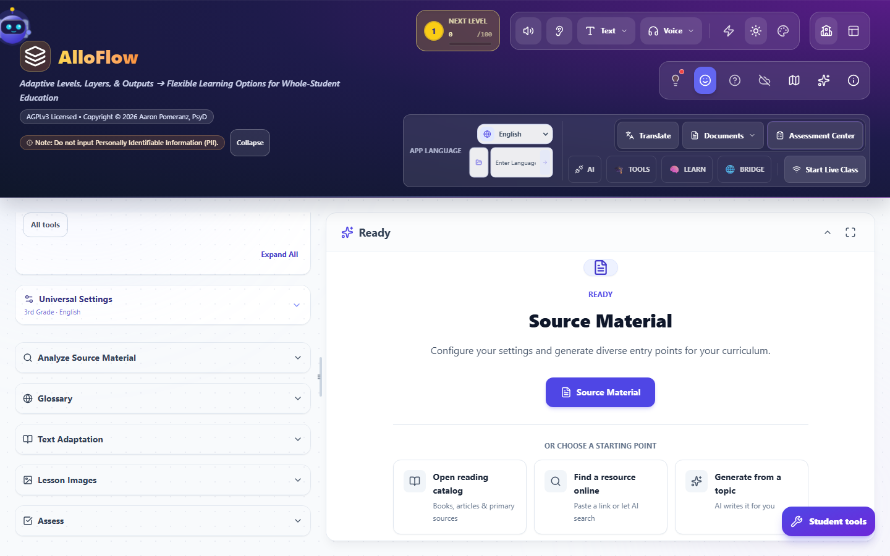

Settings, help, and finding your way
Universal Settings versus app settings, the AI connection, interface language, and the three ways to get help: Help Mode, the tour, and the command palette.
- Best for
- Everyone
- Typical use
- 10 minutes
Search the guide
Type one or more words to search every chapter.
AlloFlow has more settings than any one teacher needs, which is a problem only if nobody tells you which ones matter. This chapter sorts them into the two kinds that behave differently, then covers the three ways to get help without leaving the screen you are on.
The two kinds of settings
The distinction that prevents most confusion:
- Universal Settings shape what gets generated: grade, language, differentiation, image style. They live in the left column and apply to new work only.
- App settings shape the app itself: interface language, which AI is connected, voice, storage, and who the device thinks you are. They live in the header and the Launch Pad.
If output came out wrong, look at Universal Settings. If the app itself is behaving unexpectedly, look at app settings.
Universal Settings

Open it from the top of the left column. Collapsed, it summarises itself, for example 3rd Grade · English, and that one line is worth reading before every generation.
Two ways to fill it in. AI Match infers the settings from your source material and goal. Manual puts you in control of each one. AI Match is a good starting point; Manual is what you want once you know your class.
What is inside:
- Grade level, which drives vocabulary, sentence length, and complexity everywhere.
- Output language and translations, which decide what language students receive. This is not the same as the interface language.
- Use emoji for visual support, on or off.
- Differentiation Set, for example Target Level Only, which decides whether you get one version or a range.
- Image Style, the lesson-wide default for new Visuals, Glossary, Timeline, Concept Sort and Word Sounds images. Adventure can choose it too.
Visuals, Glossary and Word Sounds start on Use Universal style. Choose Override for this resource only when one resource genuinely needs a different look; its preset or custom-style field then appears. Timeline and Concept Sort use the Universal style directly, so there is no duplicate style field to reconcile. Adventure keeps its story-specific presets and adds Use Universal style when visual continuity matters. Style changes affect new or regenerated images, not images that already exist.
The coverage notes are the important detail. Under many settings sits a small line reading something like Applies to 12 of 19 resource types. AlloFlow is telling you exactly how far that setting reaches instead of implying it governs everything. When a setting seems not to have worked, check whether the tool you used is inside its coverage.
They apply to new work only. Changing grade level does not rewrite what you already made. Set them first, then generate. Universal Settings goes further on using them well.
App settings
The AI connection
AI Backend Settings is on the Launch Pad, top right, and again under AI in the header's More information menu, which also holds model diagnostics and a usage meter.
Until an AI is connected, AI-dependent tool panels show a line reading Needs AI setup, offering the connection routes supported by the deployment. Catalog browsing, settings, local saving, existing resources, many core simulations, and non-AI exports can remain available. Generation, AI coaching, AI hints, or any route that calls a model will wait, and a connected lookup or service may have its own requirement.
The usage meter is worth knowing about before you run a full pack, because a pack is the fastest way to spend a daily quota.
Interface language

App Language changes the buttons, menus and labels. It sits in the expanded header under its own APP LANGUAGE label, with a dropdown for the listed languages and an Enter Language box beside it for one that is not listed.
Changing it may offer to regenerate the content you already have so it matches, and it warns you first, because unsaved changes to the current text can be lost in that regeneration. Say no if you have unsaved work you care about, then change it again once you have saved.
Remember the pairing: App Language for the language you read the interface in, Universal Settings for the language students receive. Setting one does not set the other.
Voice and device setup
Offered on the Launch Pad as Voice and device setup, and marked Optional because it is. This is where microphone and voice output get configured for AlloBot's Talk mode and read-aloud.
The models that power it are downloaded once and kept on the device, so speech works without sending audio anywhere. They are also the largest thing AlloFlow stores. Saving, loading, and managing storage covers the size and how to reclaim it.
Who the device thinks you are
On first run AlloFlow asks whether this is a Student, Teacher, Parent, or Independent Learner. That answer decides whether teacher controls appear at all.
The header breadcrumb always shows the current answer, reading something like TEACHER / SOURCE MATERIAL, so a glance confirms you are not accidentally in a student view. Student tools, at the bottom right, is the deliberate way to look at your work as a student would.
You can also move between Guided Mode and Full Platform whenever you like. The Launch Pad says so directly: you can switch modes any time from the menu.
Cloud Sync
A toggle in the More information menu. Off by default, which is consistent with the rest of the product: work stays on the device unless you choose otherwise.
Storage
How much of the device AlloFlow may use, which models are downloaded, and how to recover a previous session. All of it is in Saving, loading, and managing storage.
Three ways to get help without leaving the screen
Help Mode: point at anything and ask
Help Mode is the one to learn first. Turn it on and click any button, panel or tool, and AlloFlow explains that specific element in plain language. Turn it off and everything returns to normal, dismissing the tooltips and spotlights.
Two ways in:
- Press ?, which is the fast route and what the onboarding hint points at.
- Or open the command palette and choose Toggle help mode, described there as click anything to learn what it does.
Esc turns it off. This is the fastest possible answer to "what is this control", because it never takes you away from the thing you were doing.
The tour: a guided walk through the whole workspace
The tour spotlights each part of the interface in turn, with an explanation of what it is for: the input panel, the accessibility upload, the AI Guide, the tool finder, Universal Settings, source analysis, and then each tool in the list.
How to start it. Three routes, and the first is the one to remember:
- The map icon in the header. Its tooltip reads Start Tour. It appears in the header's icon row alongside the cloud-sync toggle and the setup control. It only shows in teacher mode, which is one more reason to answer Teacher when AlloFlow asks who is using the device.
- The command palette: press Ctrl+K and choose Show me around the app, described there as a guided tour of the main features.
- Ask AlloBot to show you around, in those words.
One deliberate touch worth knowing: while the tour is running, every tool is shown, with your purpose filters set aside, so you see the whole set rather than whatever subset was filtered when you started.
The remediation pipeline has a tour of its own, reached the same way from inside that tool.
The command palette: type what you want

Ctrl+K (Cmd+K, or Ctrl+Shift+P) opens it. Type in ordinary words and it finds the command.
Three things make it more useful than a search box:
- It is grouped by intent. A section for where you are right now, a Navigate group for moving between the four workspaces, and a Create from this content group for acting on what you have.
- It is context aware. Commands that do not apply where you are standing say so, rather than failing quietly when you pick them.
- You can star the ones you use constantly, which floats them to the top next time.
Esc closes it. Between the palette, Help Mode, and the tour, you should rarely need to hunt through menus.
A sensible first-day setup
- Choose Teacher when asked who is using the device.
- Skip Quick Start if you are exploring; you can set everything later.
- Run Show me around the app once, all the way through.
- Connect an AI in AI Backend Settings, or note that generation waits until your district does.
- Set Universal Settings: grade, output language, and translations for your class.
- Set the storage preset to Automatic.
- Learn two keys: Ctrl+K and ?.
That is the whole configuration surface that matters on day one. Everything else can wait until you meet it.